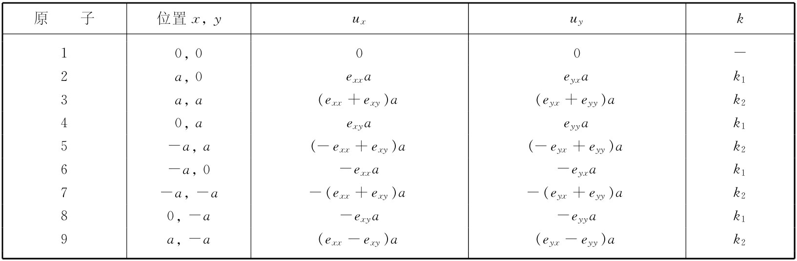
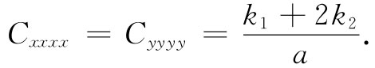

作为有关弹性学的最后一个论题，我们想要指明，从构成材料原子的性质的某些知识着手，人们如何才能试图算出材料的弹性常量来。我们将仅仅考虑像氯化钠那样的离子 立方晶体的简单情况。当一晶体被变形时，它的体积和形状都会发生变化。这种变化导致晶体中势能的增加。要算出这应变能量的变化，得先弄清楚每个原子的去处。在一些复杂晶体中，原子将按十分复杂的方式把它们自己安排在晶格中，以便使其总能量尽可能地小，这使得对应变能量的计算相当困难。然而，在简立方晶体的情况下，不难看到将会发生的情况。晶体内部的形变在几何上将与晶体外部边界的形变相似。
我们能够用下述方法算出立方晶体的弹性常量。首先，我们设想在晶体中每一对原子之间的某个力学定律。然后，计算出当晶体离开其平衡状态而发生形变时其中内能的变化。这向我们提供了一个能量与包含所有应变的平方之间的关系。将用这种方法得到的能量与式（39.13）相比较，就能够把每一项的系数看作是弹性常量Cijkl 。
在我们的例子中，将设想一个简单的力的定律：两相邻原子之间的力是中心 力，意指力的作用沿着两原子间的连线。应该预期，离子晶体中的力与此相类似，因为它们基本上都只是库仑力（共价键力往往较为复杂，因为它们能够对相邻原子作用一个侧向的推力，我们将不考虑这种复杂性）。我们也将仅仅包括每个原子与其最近邻 及次近邻 原子之间的作用力。换句话说，我们将做一种近似，即略去所有超过次近邻的力。在xy平面上将计入的力如图39-10（a）所示。当然，在yz和zx两平面上的相应的力也得包括进去。
图39-10 （a）我们正考虑的原子间的相互作用力；（b）各原子由弹簧联系起来的模型
由于我们只对适用于小应变的弹性常量感兴趣，因而就只需要在能量中随应变的平方变化的项，所以就可以想象每一对原子之间的作用力是随位移线性地变化的。于是，我们还可以设想，每一对原子由一条线性弹簧联系着，如图39-10（b）所示。所有连接钠原子与氯原子间的弹簧都应具有相同的弹性常量，比方说k1 。在两个钠原子间和两个氯原子间的弹簧可能具有不同的常量，但将通过把它们取作相等而使讨论较简单，我们将统称之为k2 （在知道了计算如何进行之后，就可以在以后的计算中取不同的k值）。
现在假定晶体的形变是由应变张量eij 描述的均匀应变产生的。在一般情况下，它将具有与x，y和z有关的各种分量，但现在我们将仅仅考虑具有exx ，exy 和eyy 这三个分量的应变，以便易于对它进行想象。如果我们挑出一个原子作为原点，则其他每个原子的位移都可由像式（39.9）那样的方程来给出：
ux =exx x+exy y，
uy =exy x+eyy y. （39.42）
假设把那个在x=y=0处的原子叫做“1号原子”，并如图39-11所示的那样对它在xy平面上的一些近邻也加上号码。又把晶格常数称为a，我们便得到列于表39-1中的那些x方向和y方向的位移ux 和uy 。
图39-11 1号原子的最近邻及次近邻原子的位移（被夸大了的）
现在可以计算储藏于那些弹簧中的势能，即k/2乘以每一条弹簧的伸长的平方。例如，在原子1与原子2间的水平弹簧中的能量为
（39.43）
注意作为一级近似，原子2的y方向位移并不改变连接原子1与原子2间弹簧的长度。然而，要获得一条像连接到原子3的那种对角线弹簧的应变能量，就必须算出由于水平方向和垂直方向两个位移所引起的长度改变。对于偏离原来的立方体的微小位移来说，我们可以把到达原子3距离的改变写成ux和uy在对角线方向上的分量之和，即
利用从表上得到的ux 和uy 值，便可获得能量
对于在xy平面上的所有弹簧的总能量，我们需要像式（39.43）和（39.44）那样的八个项之和，称这一能量为U0 ，则有
表 39-1
为了获得与原子1连接的所有弹簧的总能量，还必须对式（39.45）中的能量再添加一项。虽然我们只有应变的x方向和y方向分量，但仍然有在xy平面以外的、与次近邻相联系的某些能量，这附加的能量就是
（39.46）
弹性常量与能量密度w由式（39.13）相联系。我们已计算出来的能量是与一个原子联系着的能量，更确切地说，是每个原子能量的两倍 ，因为每条弹簧能量的一半必须分配给连接着的两个原子中的每一个。由于单位体积里共有1/a3 个原子，所以w与U0 的关系为
要求出弹性常量Cijkl ，只需完全写出式（39.45）中的那些平方项——再加上式（39.46）的那些项——并把eij ekl 的系数同式（39.13）中的相应系数做比较。例如，把含有 项都搜集起来，我们得到因子
（k1 +2k2 ）a2 ，
因而

对于剩下来的项，就有一点儿复杂了。由于我们不能够把如exx eyy 这样的两项之积与eyy exx 区别开来，所以在这里的能量表式中这种项的系数就等于式（39.13）中这两项之和。在式（39.45）中exx eyy 的系数为2k2 ，因而我们有
但由于在我们的晶体中的对称性，Cxxyy =Cyyxx ，因而就有
按照相似步骤，也可以得到
最后你们将注意到，任何包含x或y只有一次的项都为零——和上面根据对称性的论证得出的结论相同。把上述结果综合如下：
我们已能够把大块材料的弹性常量与由常量k1 和k2 表现出来的那些原子性质联系了起来。在我们的特殊情况中，Cxyxy =Cxxyy 。结果是——正如你也许会从计算所要的方法中看到的——对于立方晶体来说，这些项始终 相等，不管被计及的力项共有多少，只要 力的作用沿着每对原子间的连线——这就是说，只要存在于原子之间的力是像弹簧那样的力，而不是你也许会从一根悬梁那里得到的（以及你在共价键中所确实得到的）那种具有侧向部分的力。
我们可以用测定弹性常量的实验结果来核对这个结论。在表39-2中所给出的是若干种立方晶体的三个弹性系数的观测值 [2] 。你将会注意到，Cxxyy 与Cxyxy 一般不相等。原因是，在像钠和钾那些金属中原子间的力，并不如同我们在上述模型中所假定的那样沿连接原子的直线。金刚石也不服从该定律，因为在金刚石内的力是共价力，具有某种方向性——那些键会更喜欢处在四面体角内。像氟化锂、氯化钠那样的离子晶体，的确几乎具有我们在模型中所假定的全部物理性质，因而Cxxyy 和Cxyxy 就几乎相等。但不清楚为什么氯化银会不满足Cxxyy =Cxyxy 这一条件。
表39-2* 立方晶体的弹性模量（以1012 dyn·cm2 为单位）
* 转载自Kittel C. Introduction to Solid State Physics ，2nd ed.，1956.93
[1] 我们暂时选择把总剪切角θ分成两个相等部分，并使该应变相对于x和y是对称的。
[2] 在文献中你将常常发现使用不同符号的表示方法。比如，人们往往写成Cxxxx =C11 ，Cxxyy =C12 和Cxyxy =C44 。